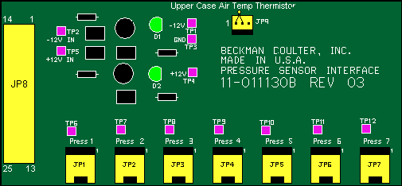
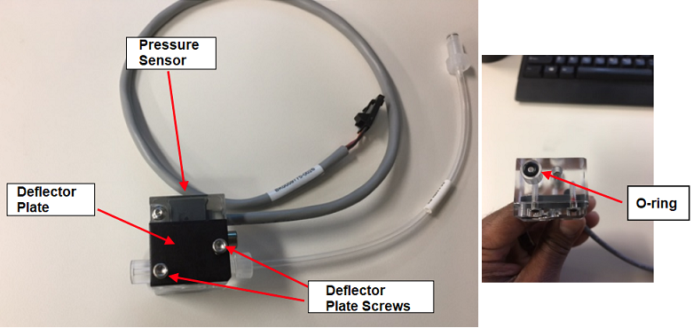
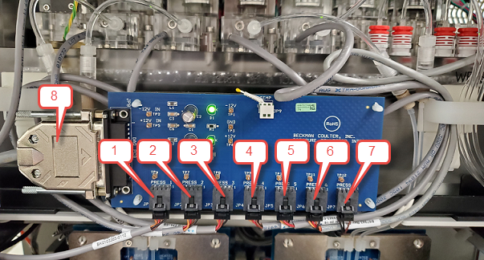
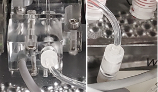

This topic includes information about how to replace a pump pressure sensor.
Caution: To prevent damage to the pressure sensor interface PCB, you must first turn off the instrument before you install the pressure sensor. It is not sufficient to turn off “All DC Power (except CPU and reagent coolers” at the Power Distribution PCB because this will not shut off the power to the pressure sensor interface PCB.
Figure 223: Pressure Sensor Interface PCB

Important: To avoid buffer contamination and damage to pressure sensor components or the interface PCB, handle the pressure sensor with care.
Note: Use proper personal protective equipment (PPE) when performing this procedure.
When to Perform
Perform this procedure to resolve the following issues:
Pressure sensor failure
Obstruction failure
Internal wash monitor failure
Pressure sensor calibration failure
Process monitoring filtered baseline outside limit
Pressure Sensor Components Kit
The pressure sensor components kit includes:
Pressure sensor with cable connector
Pressure sensor screw
O-ring
Deflector plate
Figure 224:

The following items are not included in the pressure sensor components kit:
Deflector plate screws
Short tubing
Replacing a Pump Pressure Sensor
Perform this procedure to replace a pump pressure sensor.
Prepare the instrument for pump pressure sensor replacement.
From the Main Menu select
[F8] Configure > [F7] PC Admin > [F8] System Admin > [F2] Shut Down Instrument.
Type
Access2Admin or
Access2Support.
Select
OK. Wait for the instrument to shut down.
Turn off the power switch.
Open the upper left and right covers of the instrument.
Insert the cover interlock bypass tools into both the left and right cover interlock switches.
Note: The DxI 600 has four pressure sensor connections (one Sample, two Precision, and one A1 Wash).
Figure 226:

1
Sample Pump Pressure Sensor
2
Precision Pump Pressure Sensor#1
3
Precision Pump Pressure Sensor#2
4
Precision Pump Pressure Sensor#3
5
Precision Pump Pressure Sensor#4
6
Aspirate Probe 1 Wash Pressure Sensor
7
Substrate Bubble Detector
8
Signal Parallel Cable
To catch any draining wash buffer, place a paper towel or absorbent material under the associated pipettor tip or A1 probe tip, and under the pressure sensor tubing area.
Disconnect the tubing from the pressure sensor. Do not disconnect the tubing from the union fitting for the sample and precision pressure sensors.
Figure 227:

Unscrew the sensor out from the pump or the manifold.
Note: The sample pump pressure sensor has a deflector plate. Remove the plate from the sensor, and retain the screws to install the new plate.
Clean the pump or manifold area for any wash buffer spill or crystallization.
Install the pressure sensor.
Insert the o-ring into the pressure sensor. Be sure it is not blocking the fluidics path or line of the sensor and pump or manifold.
Note: The sample pump requires the deflector plate to be installed with the new sensor. Use the screws from the old deflector to install the new plate onto the sensor.
Insert the pressure sensor to align with the pump or manifold. Screw the pressure sensor in place.
Connect the tubing to the pressure sensor.
Connect the pressure sensor cable to the designated connection on the pressure sensor interface PCB. Refer to
PCB - Interface - Pressure Sensor.
Remove the paper towel or absorbent material from the associated pipettor or A1 probe tip.